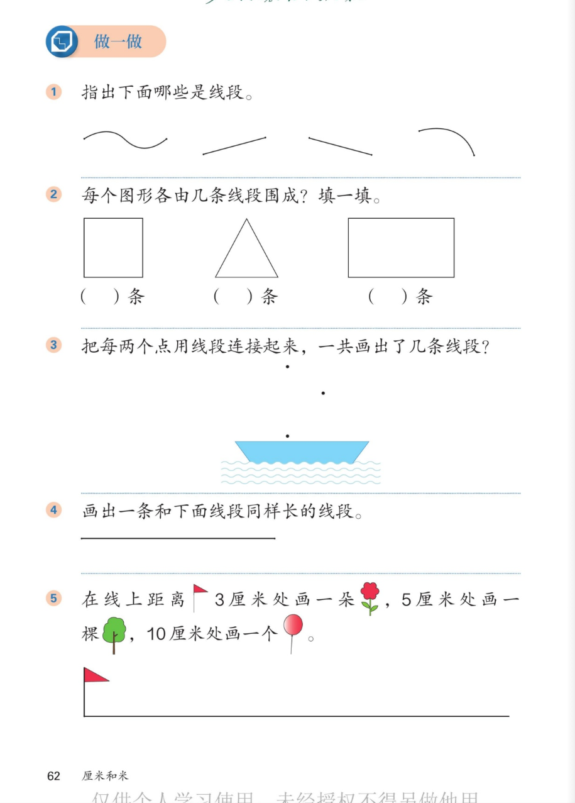

🔊 四、厘米和米 · 课本第 62 页 · 做一做（线段练习）
人教版《数学》二年级上册 · 有声图文带读 · 先想后看解析 · 认线段 · 数线段 · 画线段
题数
6
认知
2
强化
3
拓展
1
本页重点
判断线段 · 图形的边数 · 两点连线 · 按距离画图
🎧 分两步学：
① 解析教材图片
——纯声音读图，读到哪一块哪一块闪动提示；关键处先倒计时让你思考，再在图片下方给出解析并朗读。
② 分层提问练习
——六道分层题（认知 / 强化 / 拓展），先思考再展开解析、朗读参考答案；这一步不再回到图片。
也可以随时点任意一句话、图上任意一块单独听；点课本文字卡还会展开答案。
教材图片（点块听读，读到哪块哪块闪）

📖 人教版《数学》二年级上册 · 课本第 62 页 · 图片仅供个人学习，版权归人民教育出版社所有
🤔 想一想（点我可跳过）
课本的文字（点句子：听读 + 看答案）
第 1 题
哪些是线段？
看答案 ▾
第 2 条（直的）、第 3 条（斜直的）→
是线段 ✓
；
波浪线、弯弯的弧线 →
不是 ✗
（不直）；
💡 判断只看两点：直不直、有没有端点
第 2 题
图形由几条线段围成？
看答案 ▾
正方形：
4 条
；三角形：
3 条
；长方形：
4 条
；
数一数图形的每条直边，就是围成它的线段。
第 3 题
三点连线
看答案 ▾
3 个点，每两点连一条：
3 条线段
；
连出来正好是一个三角形的三条边；
小船就"藏"在三条线段围成的图形下面。
第 5 题
按距离画：花、树、气球
看答案 ▾
尺子的
0 对准旗杆
；
在刻度
3 厘米
处画 🌸；
5 厘米
处画 🌳；
10 厘米
处画 🎈；
💡 先量距离再画，位置才准
分层提问练习（先想后看解析）
🔍
认知
第 1 题：哪几条是线段？为什么？
看解析
🤔 想一想
解析：
第
2、3
条是线段；
它们
直
、有两个端点；波浪线、弧线
不直
，不是线段。
🔺
认知
第 2 题：三个图形各由几条线段围成？
看解析
🤔 想一想
解析：
正方形
4
条、三角形
3
条、长方形
4
条。
沿图形的边一条一条数，不重不漏。
•••
强化
第 3 题：三个点每两点连线，能连几条？
看解析
🤔 想一想
解析：
连
3 条
线段；
连完正好围成一个
三角形
。
📋
强化
第 4 题：怎样画出同样长的线段？
看解析
🤔 想一想
解析：
先
量
：刻度 0 对准端点，读出几厘米；
再
画
：从刻度 0 画到同样的刻度，点端点。
💡 先量后画，长度才一样
🌷
强化
第 5 题：花、树、气球分别画在哪里？
看解析
🤔 想一想
解析：
尺子 0 对准旗杆：
3 厘米
画 🌸、
5 厘米
画 🌳、
10 厘米
画 🎈；
三样东西按
从近到远
的顺序排开。
🌈
拓展
如果是 4 个点，每两点连一条线段，能连几条？
看解析
🤔 想一想
解析：
能连
6 条
；
从每个点出发连 3 条，去掉重复的正好 6 条。
🌈 按顺序连一连、数一数，不漏不重
① 解析教材图片
② 分层提问练习
⏹ 停止
纯声音 + 高亮跟随 · 想好才出解析
← 返回导航